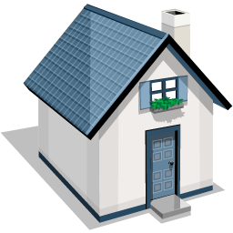
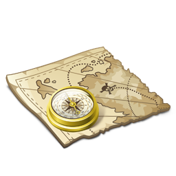
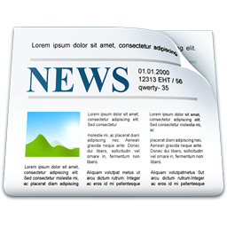

<!DOCTYPE html>

<html>
	<div id="principal" itemscope itemtype="http://www.data-vocabulary.org/Person/">
		<head>
			<title>Junín En Línea - Noticias</title>
			<meta name="description" content="Junín en Línea" />
            <link rel="stylesheet" type="text/css" href="css/junin.css" />
			<meta name="keyword" content="Junín, Cundinamarca, Colombian, Wilmer Manuel Amézquita Obando, wilcom1" />
			<!--meta http-equiv="refresh" content="1" /-->
			<script type="text/javascript" src="rss/noticias_rss.js"></script> 
			<script language="javascript"> 
				window.onload = function(){ 
					ReadRSS('http://www.junin-cundinamarca.gov.co/apc-aa/view.php3?vid=449','rssBodyTemplate','rssTitleTemplate'); 
				} 
			</script>
		</head>
		
		<body id="bodie">
			<div id="cuerpo">
				<!--HEADER-->
				<header>
				
					<div id="cajaHeader">
		
						<div id="nombrePagina">
							<h1>JUNÍN EN LÍNEA</h1>
						</div>
					  
						<div id="nombreSeccion">
							<h2>Noticias</h2>
						</div>
					</div>
				</header>
				
				
				<!--MENU DE OPCIONES-->
				<nav>
					<ul id="menu">
						<li class="menuItem" >
                          	<a href="index.html">
								
									</br>Inicio
							</a>
						</li>        
						<li class="menuItem">
                            
                               	<a href="historia.html">
	                            	</br>Historia
    	                        </a>
                        </li>
						<li class="menuItem">
							<a href="geografia.html">
                        	
                            	   	</br>Geografía
                                </a>
                        </li>
						<li class="menuItem">
                        	
                            	<a href="turismo.html">
                                	</br>Turismo
                                </a>
                       	</li>

                       	<li class="menuItem">
                        	
                            	<a href="biodiversidad.html">
                                	</br>Biodiversidad
                                </a>
                       	</li>

						<li class="menuItem">
                        	
                            	<a href="veredas.html">
                                	</br>Veredas
                                </a>
                        </li>
						<li class="menuItem">
                        	
                            	<a href="noticias.html">
                                	</br>Noticias
                                </a>
                        </li>
						<li class="menuItem">
                        	
                            	<a href="servicios.html">
                                	</br>Servicios
                                </a>
                        </li>
						<li class="menuItem">
                        	
                            	<a href="creditos.html">
                                	</br>Créditos
                                </a>
                        </li>
					</ul>			
				</nav>
				
				<!--CONTENIDO DE LA PÁGINA-->
				<section id="midle" >
					 <h3 id="sectionTitle">Noticias de Junín</h3>
					<!--Foto Inicial-->
						
						
						
					<!--Sección de Noticias-->
					<article id="welcome">
						<div class="infomidle">
							<div class="midletitle">
								<h3>Noticias de Junín</h3>
							</div>
							<div class="midletitle" id="rssTitleTemplate"> 
								(::Title::)<br/> 
								<a href="(::Link::)">
									<h1>(::Description::)</h1>
								</a> 
							</div> 
							<div class="midletext" id="rssBodyTemplate"> 
								<a href="(::Link::)" class="midletitle">
									<b>
										(::Title::)
									</b>
								</a> 
								<b>
									<!--(::Pubdate::)-->
								</b> 
								<br/>
								<font size="-1" class="content">
									(::Description::)
								</font> 
								<a href="(::Link::)">
									Ver mas...
								</a>
								<hr noshade/> 
								<br/> 
							</div>
						</div>
					</article>
			 
				</section>
				
				<!-- INFORMACIÓN LARTERAL-->
				<aside>
					<!--Contenido Tangencial-->
                    <h3 id="sectionTitle">Páginas de Interés</h3>
                    
					<div id="linkJunin" class="asideInfo">
							<h4>Página Oficial - Municipio de Junín</h4>
                        <a href="http://junin-cundinamarca.gov.co/index.shtml">Junín</a>
					</div>
					<div>

					</div>
					
				</aside>       
				
				<!--PIE DE PAGINA-->
				<footer>
					<div class="vcard">
						<h6>
							<div>
								</br>
                                (c) 2013 - Junín en Línea - <span itemprop="name">Wilmer Manuel Amézquita Obando</span> - <span itemprop="nickname">wilcom1</span>
								</br>
								Última Actualización: <time>2013-06-26</time>
							</div>
						</h6>
					</div>
				</footer>
			</div>
		</body>
	</div>
</html>

